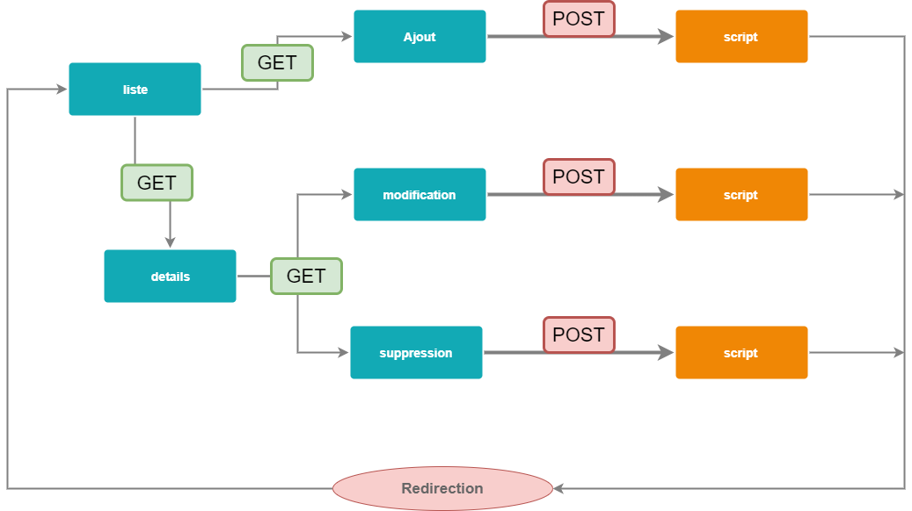

PHP - PDO -> Prise en main
Maintenant que vous avez appris les bases de PHP et rempli votre base de données, il est temps d'accéder à votre base et d'en afficher le contenu.
Nous allons utiliser la base de données record.sql pour afficher le détail d'un enregistrement de sa table disc dans une page web.
Connexion à la base de données
Les fonctions d'accès aux bases de données en PHP sont très simples d'utilisation et permettent d'effectuer toutes les opérations nécessaires à la mise à jour de la base.
Depuis sa version 5, PHP fournit par défaut un composant d'abstraction de bases de données,
c'est-à-dire de connexion et de requêtage.
Ce composant est nommé PHP Data Objects, en abrégé : PDO.
Qu'est-ce que PDO ?
Le PHP Data Objects (PDO) fournit une
interface d'abstraction à l'accès aux données.
Cela signifie qu'il vous permet d'utiliser les mêmes fonctions pour exécuter des requêtes ou
récupérer des données, et ce, quelle que soit la base de données utilisée (MySQL, Oracle,
etc.).
PDO est une classe, qui va nous permettre d'instancier un objet représentant la connexion à la base.
Connexion à un serveur MySQL
Les connexions à la BDD sont établies en créant des instances (objets) de la classe PDO. Le constructeur accepte des paramètres pour spécifier le nom/l'adresse du serveur de bases de données (Data Source Name, en abrégé : DSN), le nom d'utilisateur et le mot de passe.
Exemple :
$db = new PDO('mysql:host=localhost;dbname=record;charset=utf8', 'admin', 'votremotdepasse');L'appel au mot-clé new retourne une instance de la classe PDO que l'on stocke dans une
variable ($db).
Lors de l'instanciation d'un objet PDO, 3 paramètres sont à préciser pour la connexion :
-
commande permettant de lancer le SGBD voulu, avec les paramètres nécessaires, à savoir :
mysql:: lancement du SGBD MySQLhost: adresse du serveur hébergeant la base de données (ici, localhost)dbname: nom de la base de données (ici, record)charset: jeu de caractères utilisé (ici, utf8)
-
identifiant de l'utilisateur pour la BDD (= utilisateur MySQL, soit pour nous : admin)
-
le dernier argument précise le mot de passe pour cet utilisateur (ici, votremotdepasse)
Gestion des erreurs de connexion
À retenir : pour capturer précisément les erreurs PDO, tu peux cibler PDOException dans le catch. Et en production, on évite d'afficher les détails d'erreur à l'écran : on les journalise (logs) et on affiche un message générique.
S'il y a des erreurs de connexion, un objet PDOException
est lancé. Vous pouvez attraper cette exception si vous voulez gérer
vous-même l'erreur, ou la laisser être gérée par le gestionnaire global
d'exception.
Pour l'exécution des requêtes, PDO active par défaut le
mode d'erreur silencieux (c'est à dire qu'il n'affiche pas d'information
lorsqu'une erreur survient...). Aussi, pour vérifier si une erreur
s'est produite, et retrouver d'où vient le souci, vous devez vous-même
lui faire réactiver le déclenchement de la gestion d'erreurs.
Pour ce faire, on utilise la syntaxe suivante :
try
{
$db = new PDO("mysql:host=localhost;charset=utf8;dbname=record", "admin", "votremotdepasse");
$db->setAttribute(PDO::ATTR_ERRMODE, PDO::ERRMODE_EXCEPTION);
}
catch (Exception $e)
{
echo 'Erreur : ' . $e->getMessage() . '<br />';
echo 'N° : ' . $e->getCode();
die('Fin du script');
}-
La méthode
setAttribute()permet d'indiquer àPDOqu'il faut générer une exception à chaque fois qu'un problème est rencontré.Très pratique en mode développement, mais déconseillé en mode production !
-
Le
TRY... CATCHpermet de capter l'exception (dans la variable$e) en cas d'échec de connexion, et d'utiliser les informations sur cette exception pour obtenir un message d'erreur, notamment avec les méthodesgetMessage()etgetCode(). -
On utilise enfin le
die()pour que le serveur arrête la lecture du script PHP.
Affichage d'une liste d'enregistrements
Vous aurez besoin de ces images pour les jaquettes de disque
Pour afficher nos données sur une page, une première étape s'impose donc : notre connexion à la base de données !
Pour cela, nous allons créer un fichier db.php, reprenant le code de connexion vu
précédemment, préparé dans une méthode :
<?php
function ConnexionBase() {
try
{
$connexion = new PDO('mysql:host=localhost;charset=utf8;dbname=record', 'admin', 'votremotdepasse');
$connexion->setAttribute(PDO::ATTR_ERRMODE, PDO::ERRMODE_EXCEPTION);
return $connexion;
} catch (Exception $e) {
echo "Erreur : " . $e->getMessage() . "<br>";
echo "N° : " . $e->getCode();
die("Fin du script");
}
}
?>Reproduisez ce fichier !
Le fichier db.php contient maintenant une méthode de connexion,
ConnexionBase(), que nous allons pouvoir utiliser pour lancer nos requêtes.
Convention : en PHP, les noms de fonctions ne sont pas sensibles à la casse, donc ConnexionBase() et connexionBase() fonctionneront. Mais par lisibilité, garde une casse cohérente partout dans ton projet.
Construction d'une requête SQL
Dans une page destinée à l'affichage des artistes stockés en BDD, nous allons utiliser notre fichier de connexion et lancer une requête d'extraction de la table artist.
Nous aurons besoin, dans ce fichier, d'utiliser notre méthode ConnexionBase(), et donc,
d'accéder au fichier db.php.
Nous aurons pour cela recours à l'instruction include, qui permet
d'importer le contenu d'un fichier.
Dans le même répertoire que le fichier db.php, créez un fichier artists.php
contenant le code suivant :
<?php
// on importe le contenu du fichier "db.php"
include "db.php";
// on exécute la méthode de connexion à notre BDD
$db = connexionBase();
// on lance une requête pour chercher toutes les fiches d'artistes
$requete = $db->query("SELECT * FROM artist");
// on récupère tous les résultats trouvés dans une variable
$tableau = $requete->fetchAll(PDO::FETCH_OBJ);
// on clôt la requête en BDD
$requete->closeCursor();
?>Ici,
- la connexion créée avec notre méthode
connexionBase()est stockée dans la variable$db(qui récupère l'objet PDO renvoyé avecreturn $connexion;) - la requête
SELECTen BDD est lancée grâce à la méthodequery()de l'objet PDO et la réponse de la BDD est stockée dans la variable$requete - la méthode
fetchAll()extrait les enregistrements trouvés et les renvoie sous forme de tableau d'objets, dans la variable$tableau - la méthode
closeCursor();libère la requête, pour pouvoir en lancer d'autres
La variable $tableau contient donc le résultat de notre requête,
c'est-à-dire la liste des artistes trouvés.
Chaque artiste est représenté sous la forme d'un objet.
En phase de développement, pour visualiser le contenu de vos variables, utilisez la méthode
var_dump():// en haut de page, avec la requête : $tableau = $requete->fetchAll(PDO::FETCH_OBJ); var_dump($tableau);
Là où c'est nécessaire, il nous est ainsi possible de manipuler notre tableau d'enregistrements et ses
données.
Ici par exemple, affichons les informations sur chacun des artistes extraits de notre BDD.
A la suite du bloc PHP dans la page artists.php, ajoutez le code suivant :
// ... après le bloc PHP :
<!DOCTYPE html>
<html lang="fr">
<head>
<meta charset="UTF-8">
<meta http-equiv="X-UA-Compatible" content="IE=edge">
<meta name="viewport" content="width=device-width, initial-scale=1.0">
<title>PDO - Liste</title>
</head>
<body>
<table>
<tr>
<th>ID</th>
<th>Nom</th>
</tr>
<?php foreach ($tableau as $artist): ?>
<?php var_dump($artist); // Le var_dump() est écrit à titre informatif.>
<tr>
<td><?= $artist->artist_id ?></td>
<td><?= $artist->artist_name ?></td>
</tr>
<?php endforeach; ?>
</table>
</body>
</html>Dans ce code,
- la variable
$artistcontient, à chaque itération de la boucleforeach, un objet correspondant à un enregistrement d'artiste en BDD - pour accéder aux propriétés d'un artiste (= colonnes de la table artist en BDD),
il faut utiliser la syntaxe :
objetBDD->nomdelacolonne; ici, on essaie donc de lire l'ID, et le nom de notre artiste.
CRUD ?
Nous venons de voir comment manipuler des données issues d'une BDD pour les afficher sur une page voulue.
Les outils comme PDO nous permettent de faire principalement des CRUD. Cet acronyme signifie :
- Create (= création, ajout)
- Read (= Lecture), ou parfois Retrieve (= récupération)
- Update (= mise à jour, modification)
- Delete (= suppression)
Si vous avez suivi les séances sur les bases de données, ces mots vous seront familier...
Pour faire bref, mettre en place un CRUD sur une table, ou plus largement sur une BDD, revient à réaliser les traitements (Front et/ou Back, et BDD) nécessaires à leur gestion, soit : besoins d'affichage, de création, de modification et de suppression de données.
Dans un projet, une gestion CRUD sur une table donnée peut être représentée de la manière suivante :

Nous venons ainsi de réaliser la première étape, qui correspond à la liste.
Dans les séances suivantes, on s'attaque au reste !